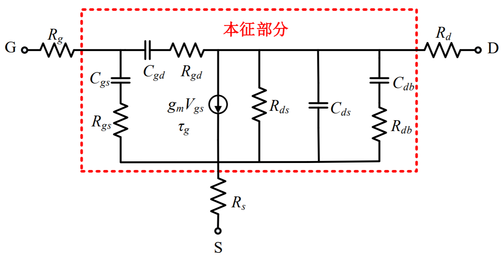
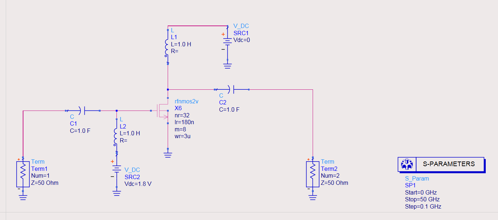
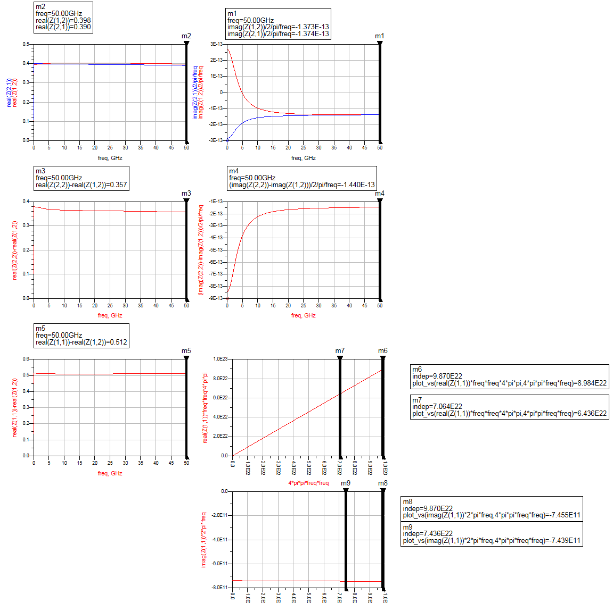
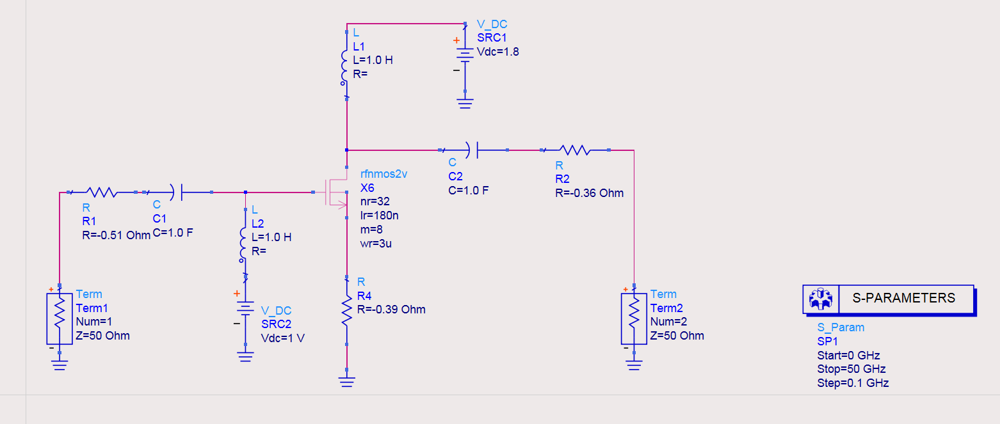
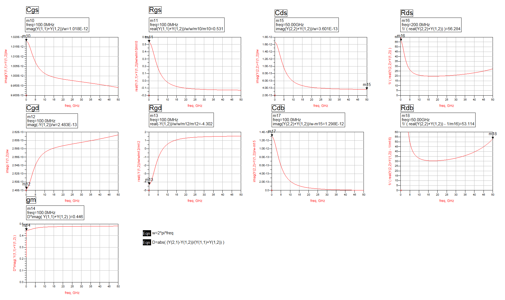
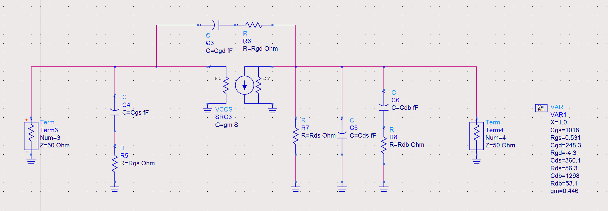
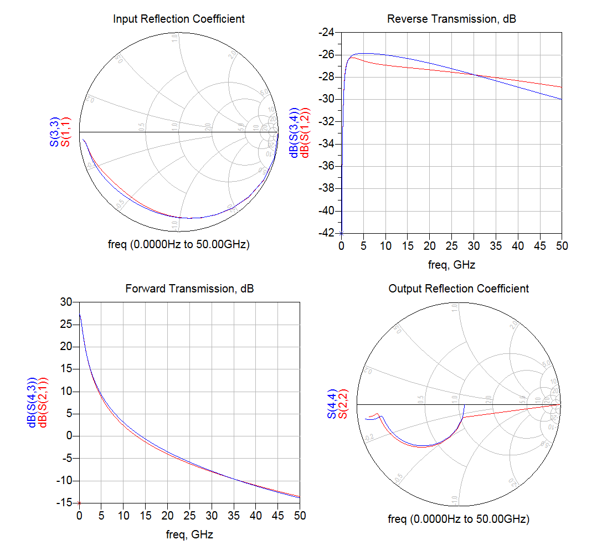

Modeling of Transistors in Small-Signal Condition
This article is about the modeling of MOSFET in small-signal condition.
Direct Extraction Conditions
| Bias State | Condition |
|---|---|
| Zero bias | $V_{gs}=0,V_{ds}=0$ |
| Strong inversion | $V_{gs}>V_{th},V_{ds}=0$ |
| Active | $V_{ds}>V_{gs}-V_{th}>0$ |
Small-Signal Parameter Extraction
Model Description
Schematic of the small-signal MOSFET model. It is comprised of an intrinsic transistor and extrinsic parasitic resistors and inductors (not drawn). In the model, the non-quasi-static (NQS) effect is represented by a delay $\tau_g$ in the voltage-controlled current source (VCCS).

The Y parameter of the intrinsic transistor $Y'$ is
Several observations can be made from the Y parameter. First, the denominator of these equations approaches unit when the frequency approaches zero. For instance, at sufficiently low frequency, we have
Second, at sufficiently high frequency, the Y parameter can be simplified as
Adopting these two conditions, we may calculate $R_{ds}, R_{db}, C_{ds}, C_{db}$.
The Z parameter of the whole transistor $Z$ is
where $Z'$ is the Z parameter of the intrinsic transistor, and can be converted from the aforementioned Y parameter.
To extract the outside parasitic parameters, coldFET method is used. In the setting, the transistor is biased in strong inversion region (high Vgs and zero Vds). Hence, the drain and the source of the intrinsic transistor is assumed to be connected together. The Z parameter for this setting is
We may further split the real and imaginary part of the $Z_{11}$, as
After manipulation, $L_g, R_g$ can be obtained from
Extraction
In the first step, we have to extract the extrinsic parameters. Equations are detailed as follows. Unless otherwise stated, the extraction can be performed at any frequency. The transistor must be biased in strongly inversed region (i.e., high Vgs and zero Vds).
The second step is to de-embed the extrinsic parameters. For measured data, the extrinsic parameters can be subtracted from the Z parameter; for simulation, we can simply add negative resistors and inductors at proper positions to cancel the original extrinsic parasitics.
The third step is to assess the intrinsic parameters. For this measurement, the transistor has to be biased at nominal gate and drain voltage. Y parameter is measured at both very low and high frequencies. Equations are as follows.
At a sufficient low frequency
Besides
Extraction Example
Extrinsic Parameter Extraction


Thus, estimated parameters are $R_s=0.39,R_d=0.36,R_g=0.51$, inductances are ignored.
De-Embedding
The de-embedding can be implemented simply by adding negative "resistors" and "inductors" to each terminal of the transistor.
Intrinsic Parameter Extraction


Verification
In the verification, the NQS effect is ignored.


Strange Things
- Negative inductance at the each gate and drain
- Rgd is negative
Reference
- 丛诗力. 毫米波CMOS晶体管建模技术研究.
- 李志群, 王志功. 射频集成电路与系统.
- Yang Tang, Li Zhang, Yan Wang, "Accurate small signal modeling and extraction of silicon MOSFET for RF IC application," Solid-State Electronics.
- Post link: https://triblemany.github.io/archives/d4a45699/modeling-of-transistors.html
- Copyright Notice: All articles in this blog are licensed under BY-NC-SA unless stating additionally.